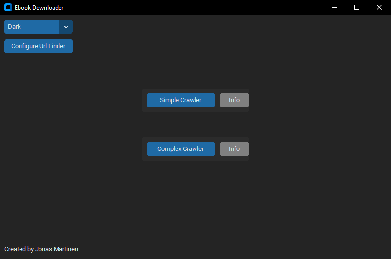
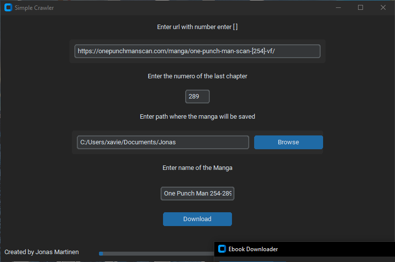
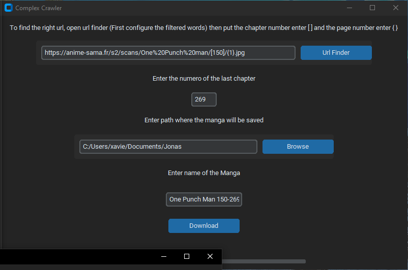

Projet personnel | Logiciel Desktop & Scraping
J'ai développé une application logicielle complète permettant de télécharger des ebooks et des mangas directement depuis divers sites web. Ce projet m'a permis d'approfondir mes connaissances en développement Python et de découvrir le monde de l'extraction de données en ligne.
Pour rendre l'outil accessible et ergonomique, l'interface graphique a été conçue à l'aide de la bibliothèque CustomTkinter. Sous le capot, le moteur de web-scraping repose sur un ensemble d'outils puissants : Selenium pour l'automatisation du navigateur, BeautifulSoup (bs4) et lxml pour le parsing du code HTML, ainsi que Requests.


